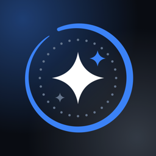

Glitter Live
Turn any video into a Live Photo wallpaper that moves every time you wake your iPhone.
- Trim StudioPick the perfect 1–3 seconds, frame it around the clock, and choose the cover photo.
- Ready for the Lock ScreenLive Photos written the way the Lock Screen expects, so your wallpaper actually moves.
- ExploreHand-picked live wallpapers, saved in a tap.
- Private by designYour videos are processed on your iPhone and never uploaded. No watermark.